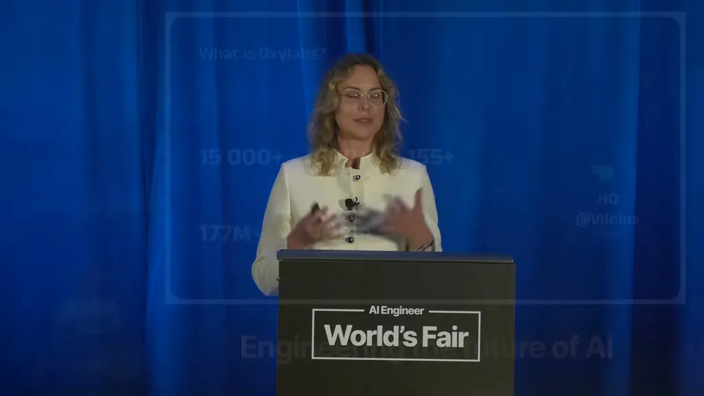
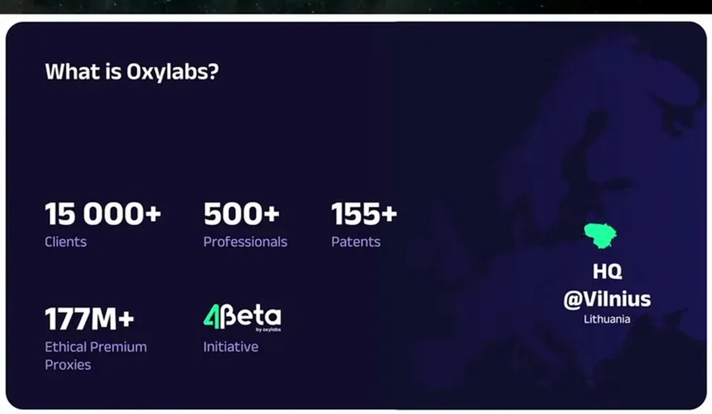
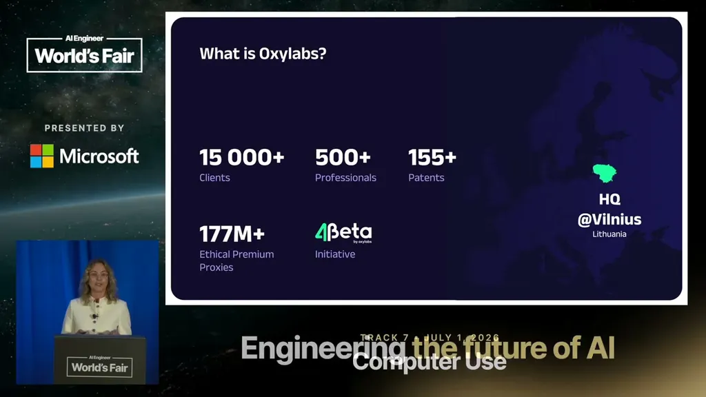
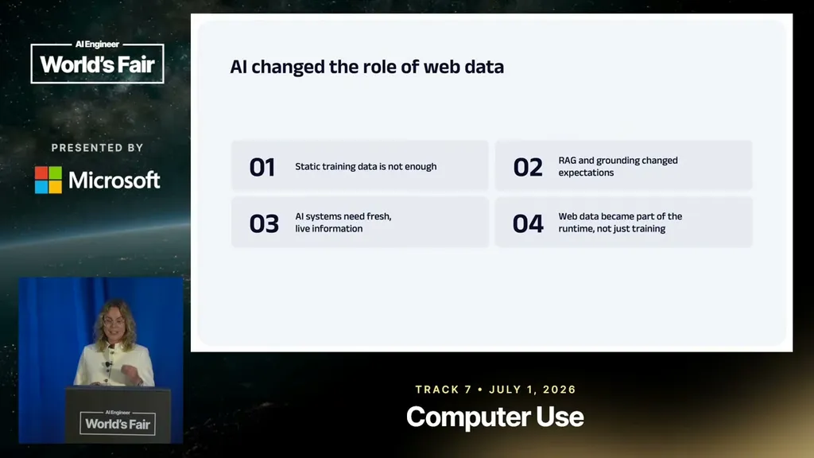
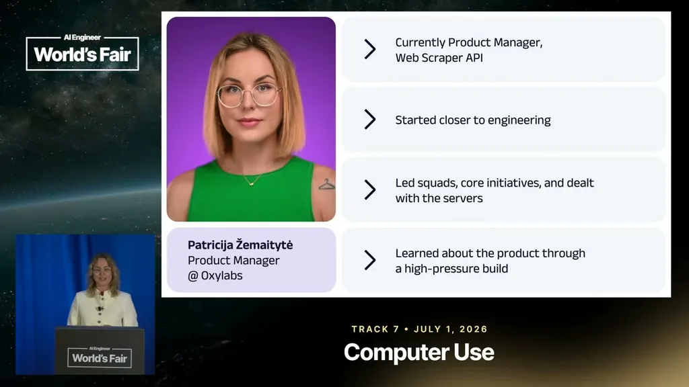
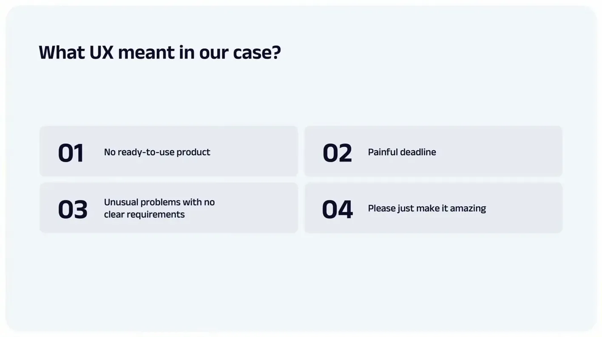
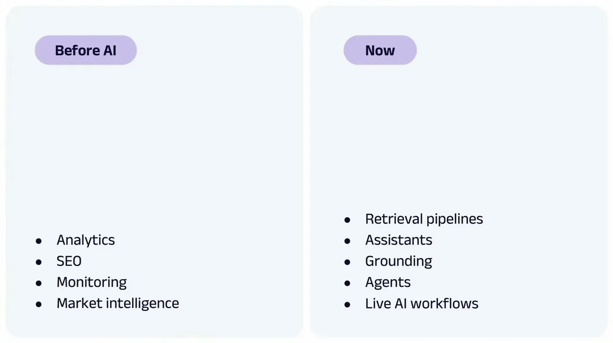
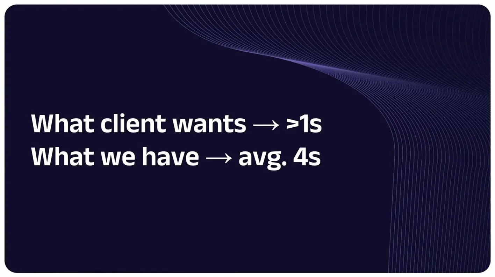
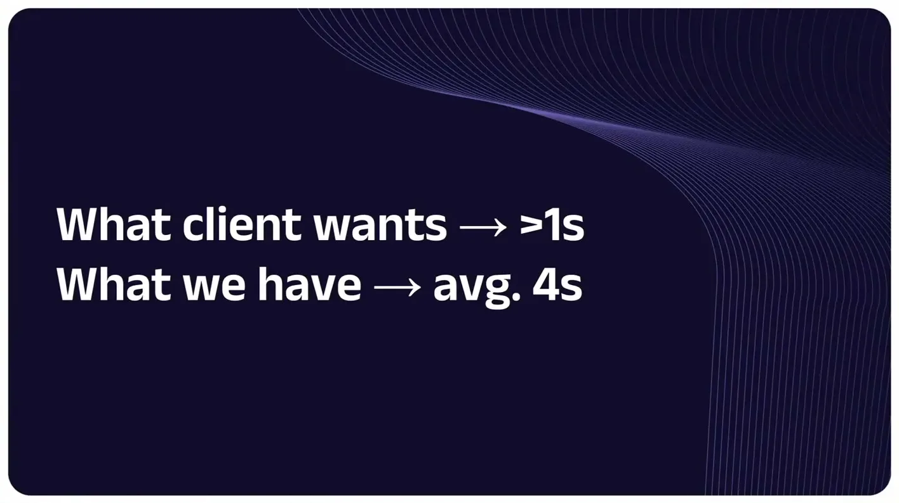
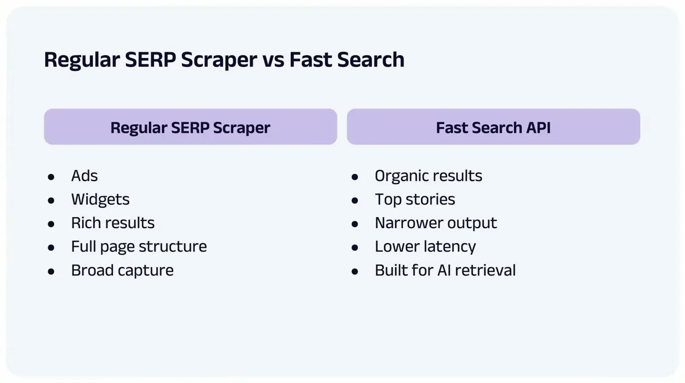

Informs build-vs-buy decisions for teams that need live web data (search, video, scraping) feeding AI pipelines
Each Oxylabs product line seems to follow the same client-driven arc: build a working version fast, then scale it repeatedly as demand grows (ours).
“What's the What's the scale? At least 5 petabytes per month.”
said at 02:36“In less than 2 weeks, we got around 650 milliseconds P90.”
said at 09:23“today we have fast search API that delivers results and fresh data directly into AI workflows with 550 milliseconds”
said at 11:30“our scale move from 400 million daily requests to almost 6 billion daily requests”
said at 12:03“we were working our way around 10,000 requests per second. Demand has forced us to scale to 60,000 requests per second and in less than 2 months.”
said at 12:36“during one of those load tests, we hit the wall around 20,000 requests per second.”
said at 14:09“internally, we call this project 60 because we had to scale up to 60,000 requests per second. Now, it's already becoming project 150.”
said at 15:43“the next generation of AI will not be powered by better models. It will be powered by better infrastructure around it.”
said at 17:19









| Stance | Claim | t |
|---|---|---|
| asserts | The video API product began as a client request for at least 5 petabytes per month, with a two-week deadline. | 02:36 |
| asserts | The first version of the fast search API hit roughly 650ms P90 latency within two weeks of starting from scratch. | 09:23 |
| asserts | The fast search API now delivers results into AI workflows at 550 milliseconds average latency. | 11:30 |
| asserts | Daily request volume for the search product grew from 400 million to almost 6 billion requests. | 12:03 |
| asserts | Web-unblocker throughput scaled from about 10,000 to 60,000 requests per second in under two months. | 12:36 |
| predicts | Žemaitytė predicts the next generation of AI progress will be driven by infrastructure connecting models to live data more than by model improvements. | 17:19 |
| asserts | The hardest scaling bottleneck showed up during organic-traffic load testing, which hit a wall at around 20,000 requests per second. | 14:09 |
| asserts | The internal scaling effort, called "project 60" for its 60,000 requests/second target, is already becoming "project 150." | 15:43 |
Machine-readable copy embedded in this page (script#ontology) and in the corpus ontology.